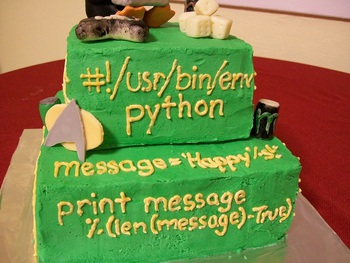
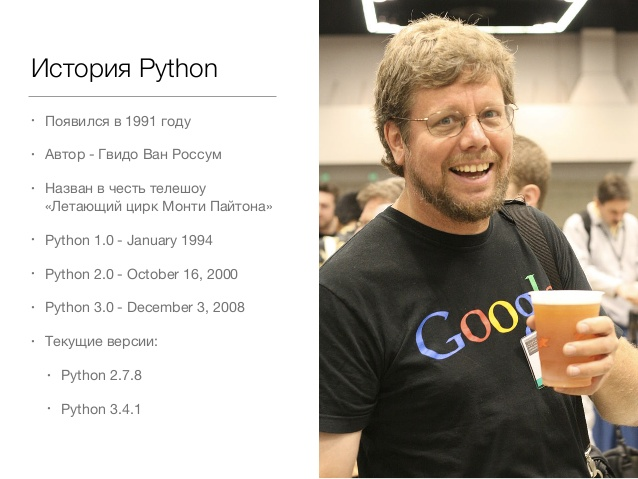

Добро пожаловать на курсы от компании Fogstream

Функции


# Что делает эта функция?
print('Hello world!')
# А эта?
len('Hello world!')
# Тут еще сложнее
sorted('Hello world!')
var = 1 # Переменная ссылается на число
var = 'Привет' # Ошибки никакой нет. WTF?
a = 5
b = 10
a = 3.14
b = 5.25
a = 1
b = 1.0
a == b # ???
a = 1
b = 1.0
a == b # True
z = 1 + 2j
# Действительная часть
z.real # 1.0
# Мнимая часть
z.imag # 2.0
"Числа - они и в Африке числа."(с) Цитаты великих людей
a = 5
b = 3.14
# Скадываем
a + b
"Числа - они и в Африке числа."(с) Цитаты великих людей
a = 5
b = 3.14
# Скадываем
a + b # 8.14
# Отнимаем
a - b
"Числа - они и в Африке числа."(с) Цитаты великих людей
a = 5
b = 3.14
# Скадываем
a + b # 8.14
# Отнимаем
a - b # 1.8599999999999999
# Умножаем
a * b
"Числа - они и в Африке числа."(с) Цитаты великих людей
a = 5
b = 3.14
# Скадываем
a + b # 8.14
# Отнимаем
a - b # 1.8599999999999999
# Умножаем
a * b # 15.700000000000001
# Делим
a / b
"Числа - они и в Африке числа."(с) Цитаты великих людей
a = 5
b = 3.14
# Скадываем
a + b # 8.14
# Отнимаем
a - b # 1.8599999999999999
# Умножаем
a * b # 15.700000000000001
# Делим
a / b # 1.592356687898089
"Числа - они и в Африке числа."(с) Цитаты великих людей
a = 5
# Возводим в степень
a ** 2
"Числа - они и в Африке числа."(с) Цитаты великих людей
a = 5
# Возводим в степень
a ** 2 #25
a == b # ???
a > b # ???
a <= b # ???
a == b # False
a > b # True
a <= b # False
'строка'
"строка"
''' строка с
переносом '''
a = 'Fogstream'
# Получение символа по индексу
a[0] # 'F'
a[4] # 't'
a[0:3] # 'Fog'
a[0:3] # 'Fog'
a[:3] # Тоже самое
a[0:3] # 'Fog'
a[:3] # Тоже самое
a[4:9] # 'tream'
a[0:3] # 'Fog'
a[:3] # Тоже самое
a[4:9] # 'tream'
a[4:] # Можно и так
a[-1] # Отрицательный индекс?!
a[-1] # 'm'
a[start:end:step]
a[1:3]
a[:4:2]
a[2::3]
a[::2]
a[::-1]
a[:]
new_str = a[:-1]
print(new_str) # 'Fogstrea'
print(a) # 'Fogstream'
b = 'Courses'
str = a + ' ' + b
print(str) # 'Fogstream Courses'
Строки не изменяемы
a[0]='p' # Ошибка!
'hello '.strip() # 'hello'
'hello world'.upper() # 'HELLO WORLD'
len('hello') # 5
'wor' in 'hello world' # True (входит ли "wor" в строку "hello world")
'hello world'.startswith('hell') # True (начинается ли "hello world" c "hell")
sudo apt-get install python3